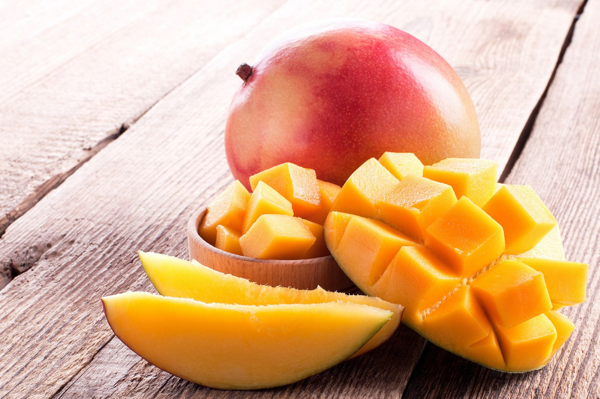

我最喜歡的水果(芒果)
熱帶地區的酸甜滋味
每到夏天，就是芒果的盛產季，在炎熱的夏天吃上一碗新鮮的芒果冰，多麼的透心涼啊!芒果有很多品種，不管是愛文芒果、金煌芒果、甚至是台灣在來種的土芒果，都有著不同的風味，而且芒果也可以做出好吃的農產品，芒果乾就是其中一種非常有名的農產品，在台灣，芒果大多種植在熱帶地區的中南部，尤其是在台南市的玉井區，擁有「芒果之鄉」的美譽，芒果冰也成為了外國朋友來到台灣一定要吃的美食之一。
芒果小檔案
常綠大喬木，且樹齡很長，每一花序有數百以至數千朵以上小花，淡黃色，分兩性與雌性兩種花，麗蠅是其最重要的授粉昆蟲，花謝後結核果。果實大，歪卵形，成熟果黃色，果肉嫩，香甜。芒果是芒果屬的一種植物和果實。性喜高溫、潮濕的天氣，生殖生長期（花、果）需較高溫度，以排水良好且含腐植質的砂質土壤最適宜

芒果的營養價值與注意事項
芒果肉含有豐富的維他命A、維他命C和維他命D，亦有醣類、繕食纖維等微量元素，芒果具有可抑制腦細胞死亡的效果，食用冷凍芒果，有助於讓使用過度的大腦得到舒緩。中醫學認為，芒果性涼、具生津解渴及止暈眩等功效，甚至可治胃熱煩渴、嘔吐不適及暈車、暈船等，但芒果不利於腎臟，患有急性或慢性腎炎的病人應忌食芒果。研究人員將芒果多酚提取物用於大腸癌、乳癌、肺癌、血癌和前列腺癌，發現芒果對所有測試的癌症都有一定的影響，但對於乳癌和大腸癌影響最為明顯。
部分人對芒果有過敏，尤其是果皮附近0.5cm處的果肉，其汁液帶有漆酚，多數是在食用芒果的時候皮膚接觸到芒果的汁液，導致嘴唇紅腫、乾裂，耳朵、脖子等處也會出現紅腫疼痛等症狀。為避免或減輕過敏症狀，可以將芒果切成小塊，用牙籤等放入口中，避免芒果汁表皮液接觸。
資料來源: